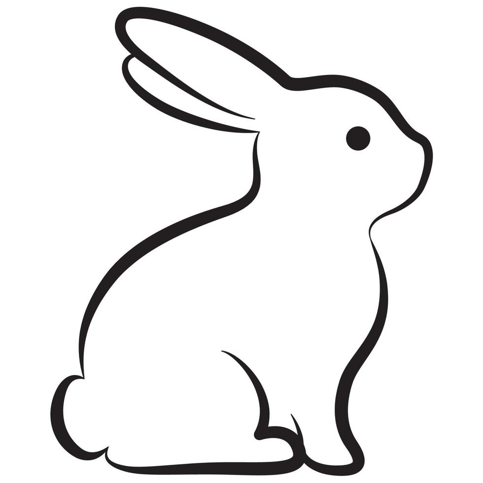

üêæ Adopto
Home
About
Contact
Welcome to Adopto ü¶¥
Your new best friend is waiting for you!
Get started
Why Adopt?
✔️ You’re saving a life and giving a pet a second chance.
✔️ Adoption is more affordable than buying a pet.
✔️ Many pets are already trained and vaccinated.
✔️ You help stop unethical breeding practices.
✔️ Adopted pets give lifelong love and gratitude.
✔️ You free up shelter space for another animal in need.
✔️ Pets improve mental well-being and reduce stress.
Fun Facts About Pets!
✔️ Dogs' sense of smell is 40x better than humans.
✔️ Cats sleep for about 70% of their lives.
✔️ Goldfish have a longer memory than you think .
✔️ Dogs can understand up to 250 words and gestures.
✔️ Dogs’ noses are as unique as human fingerprints.
✔️ Parrots can live over 60 years.
✔️ Rabbits can be litter trained just like cats.
Browse Our Pets
CAT
DOG
RABBIT

OTHERS..